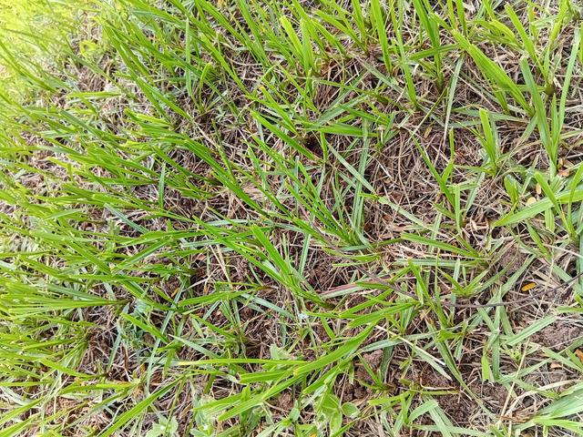
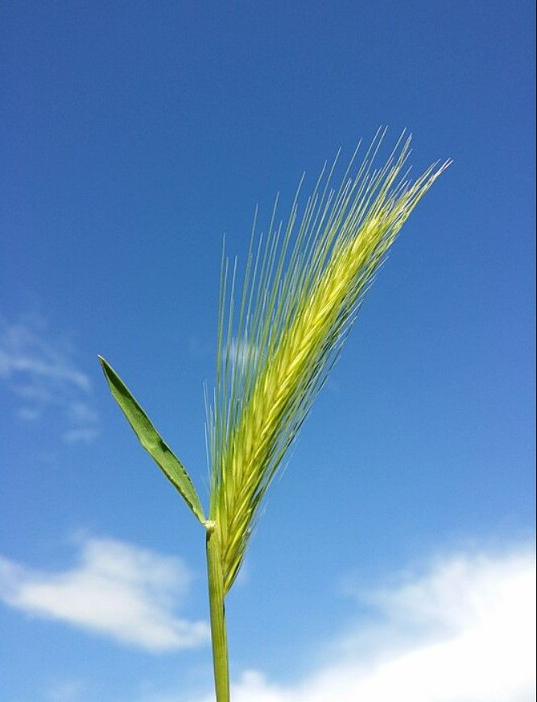
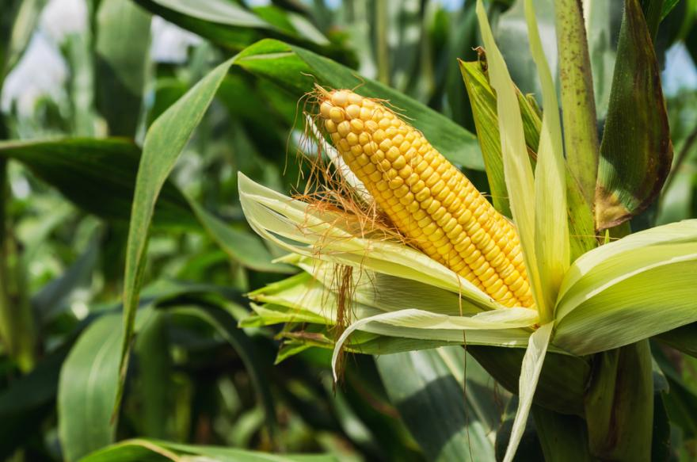

LES GRAMINES : FLEUR, FRUIT, VENT
Les graminées et les dicotylédones (Angiospermes). Plantes à fleurs les plus évoluées dont la graine est protégée à l'intérieur d'un fruit. Elles se divisent selon la structure de leur graine : Les monocotylédones (dont les graminées). Leur graine ne possède qu'un seul cotylédon (feuille embryonnaire), comme le blé, le maïs ou les herbes.



Appareil végétatif : monocotylédones à racines fasciculées, feuilles longues à nervures parallèles et croissance à la base, qui résiste au pâturage.
Reproduction : fleurs réduites pollinisées par le vent, qui donnent un fruit(le grain). Blé, riz, maïs et canne à sucre sont les graminées : la base de l’alimentation humaine.